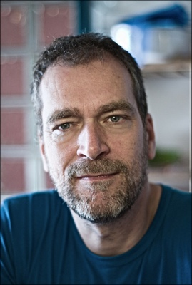

Was ist denn Blender?
- 3D-Grafikprogramm
- 3D-Tools
- Video/Audio-Bearbeitung
- Game Engine
- Open Source
Wie fing alles an?

- 1998: Ton Roosendaal gründet «Not a Number»
- 2002: Investoren stoppen Entwicklung
- Gründung Blender Foundation
- Crowdfunding zum freikaufen
- 100.000 in 7 Wochen
- 13.10.2002: Unter GPL veröffentlicht
Project Orange
- 2005: Project Orange beginnt
- Open Movie als Entwicklungsboost
- Komplett Open Source
...
- 2007: Blender Institut
- 2008: Blender 2.5
- Big Buck Bunny!
Project Durian
- 2009-2010: Sintel
- Fertigstellung von 2.5
- 4K Auflösung
Und jetzt?
- Finanzierung
- 2 Vollzeitentwickler, 2 Teilzeitentwickler
- 149 Commiter
- 32.758 Commits
Und was kann das so?
- Cross Plattform
- flexible Python API
- Flexible GUI
Und was kann das so?
3D-Grafik
- Modellieren
- Sculpting
- Texturieren
- Animieren
- Raytracer
Und was kann das so?
Audio/Video
- Schnitt
- Kamera Tracking
- Node Editor
Und was kann das so?
Game Engine
- Physik Engine
- Dynamische Beleuchtung
Wie wird das Organisiert?
Blender Foundation
- Finanziert
- Hostet
- Organisiert Blender Konferenz
Wie wird das Organisiert?
Blender Institut
- Studio für Open Projects
- Büro für Angestellte
Wie wird das Organisiert?
- Roosendaal als Koordinator
- SVN-Repository
- Mailingliste
- Wöchentliches IRC-Meeting
Ein wenig Technik
BMesh
- Repräsentation der Objekte
Ein wenig Technik
Cycles
- seit 2.6
- Pathtracer

Ein wenig Technik
Cycles
- unbiased
- Phsyikalisch korrekt
[
/
]
#